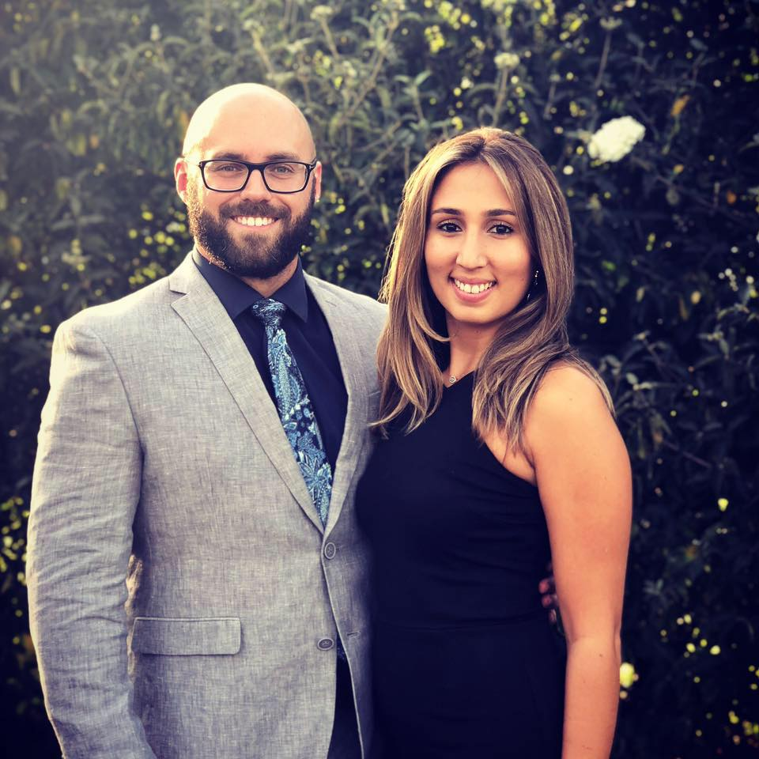

About Me
Born and raised in Reston, Virginia. Attended college in Blacksburg, VA at Virginia Tech where I majored in Financial Planning. Currently living in Washington, DC. I am currently living in the Noma neighborhood. I have lived in the District for three years and have fallen in love with the city.
I have been employed in the wealth management industry for six years where I have managed operations and been responsbile for the IT needs of the firm. I am excited to be a part of the GW coding bootcamp with the goal of pursing a career in web development.
I enjoy playing sports, being outdoors, playing video games, and spending time with friends and family. My favorite thing to do is travel and be by the ocean. My favorite outdoor activity is stand-up paddleboarding.